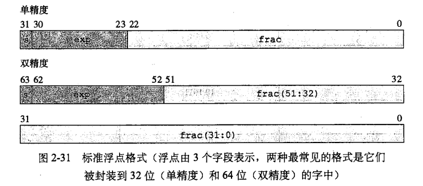

在金额计算中，我们常会为了精确用浮点数来表示，但是用浮点数往往会造成精度损失的情况，这是为什么呢？我们先来看一段代码。
1 | public static void main(String[] args) { |
运行结果如下：1
2
3
4
5
6
7
8
9
10
11
12
13
14
15
16
17
18
19
20
210.2
0.3
0.4
0.5
0.6
0.70000005
0.8000001
0.9000001
1.0000001
1.1000001
=============
0.2
0.30000000000000004
0.4
0.5
0.6
0.7
0.7999999999999999
0.8999999999999999
0.9999999999999999
1.0999999999999999
无论是float还是double，累加0.1都会出错，这种情况如果出现在金融领域会造成不可估量的损失。
我们先来分析一下原因，首先下图是IEEE的标准浮点格式。

一般来说，现在的编译器都支持两种浮点格式，一种是单精度，一种是双精度。单双精度分别对应于编程语言当中的float和double类型。其中float是单精度的，采用32位二进制表示，其中1位符号位，8位阶码以及23位尾数。double是双精度的，采用64位二进制表示，其中1位符号位，11位阶码以及52位尾数。
这就出现两个问题：
- 在浮点数表示一个数，浮点数往往取的是近似值。换句话说，在程序里写的10进制小数，计算机内部无法用二进制的小数来精确的表达。比如
101.11就等于1 * 2^2 +0 *2^1 + 1*2^0 + 1*2^-1 + 1*2^-2 = 4+0+1+1/2+1/4 = 5.75。对于二进制小数，小数点右边能表达的值是1/2, 1/4, 1/8, 1/16, 1/32, 1/64, 1/128 ... 1/(2^n）。现在问题来了，计算机只能用这些个1/(2^n）之和来表达十进制的小数，那如何表达十进制的0.2呢？
0.01 = 1/4 = 0.25 太大
0.001 =1/8 = 0.125 又太小
0.0011 = 1/8 + 1/16 = 0.1875 很接近了
0.00111 = 1/8 + 1/16 + 1/32 = 0.21875 大了
0.001101 = 1/8+ 1/16 + 1/64 = 0.203125 还是大了
0.0011001 = 1/8 + 1/16 + 1/128 = 0.1953125 有点小
0.00110011 = 1/8+1/16+1/128+1/256 = 0.19921875 差不多了
这就是我说的用二进制小数没法精确表达10进制小数的含义。 - long的最大值是2的64次方减1，需要63个二进制位表示，即便是double，52位的尾数也无法完整的表示long的最大值。不能表示的部分也就只能被舍去了。对于金额，舍去不能表示的部分，损失也就产生了。
综上，浮点数在其有限的尾数为下，不能表示精度要求很高的数。如果我们要需要的话，可以使用BigDecimal来做精准运算。